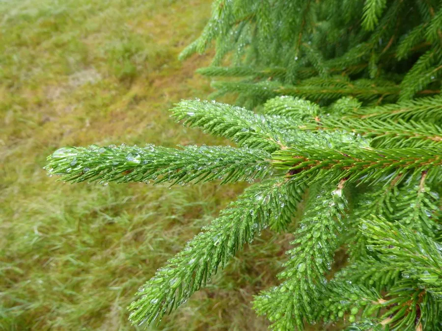

乔木 · 植物界
麦吊云杉 Picea brachytyla

松科云杉属常绿大乔木，小枝下垂、叶扁平，球果悬垂，是中国西南亚高山暗针叶林的重要建群种，木材优良。
- 分类
- 门裸子植物门纲松柏纲目松柏目科松科属云杉属
- 栖息环境
- 海拔 1500–3500 米的亚高山地带，喜凉爽湿润、多云雾的气候
- 地理分布
- 中国四川、云南、湖北、陕西、甘肃等地，为中国特有种
- 保护级别
- 中国国家二级保护野生植物；长期采伐使野生资源下降
物种志
麦吊云杉为常绿乔木，高可达 30 米，树皮灰褐色并纵裂，小枝细长下垂，淡黄色或淡褐色。叶片扁平、条形，长 1–2.5 厘米，先端尖，上面有两条白色气孔带，螺旋状着生后向两侧伸展。雌雄同株，球果悬垂，圆柱形，长 6–12 厘米，成熟时淡褐色至红褐色，种鳞倒卵形，种子具翅。
本种为中国特有种，分布于四川、云南、湖北、陕西、甘肃等地，生于海拔 1500–3500 米的亚高山地带，常与冷杉、铁杉等组成针阔混交林或暗针叶林，喜凉爽湿润、多云雾的气候与深厚肥沃的酸性土壤。它耐寒、耐阴，是长江上游重要的水源涵养树种。木材轻软、纹理直，可供建筑、乐器与造纸；树形端庄，也可作高海拔园林树。因长期采伐，野生资源下降，被列入国家二级保护野生植物。
形态与习性
- 株高可达 30 米，小枝细长下垂
- 花期4–5 月，球花单性同株
- 球果成熟9–10 月，球果悬垂、圆柱形
- 光照耐阴，幼树可在林冠下更新
- 水分喜湿润多雾，适宜年降水量 800 mm 以上
- 土壤深厚肥沃的酸性山地棕壤
- 主要用途水源涵养、建筑用材与乐器面板
趣味知识
- 麦吊云杉的小枝明显下垂，是区别于许多云杉的直观特征。
- 它常与冷杉混生，构成西南高山峡谷的暗针叶林。
- 云杉木材共鸣性好，是制作吉他、提琴等乐器面板的优良材料。
- 它的球果悬垂于枝下，成熟后种鳞张开散出带翅种子。